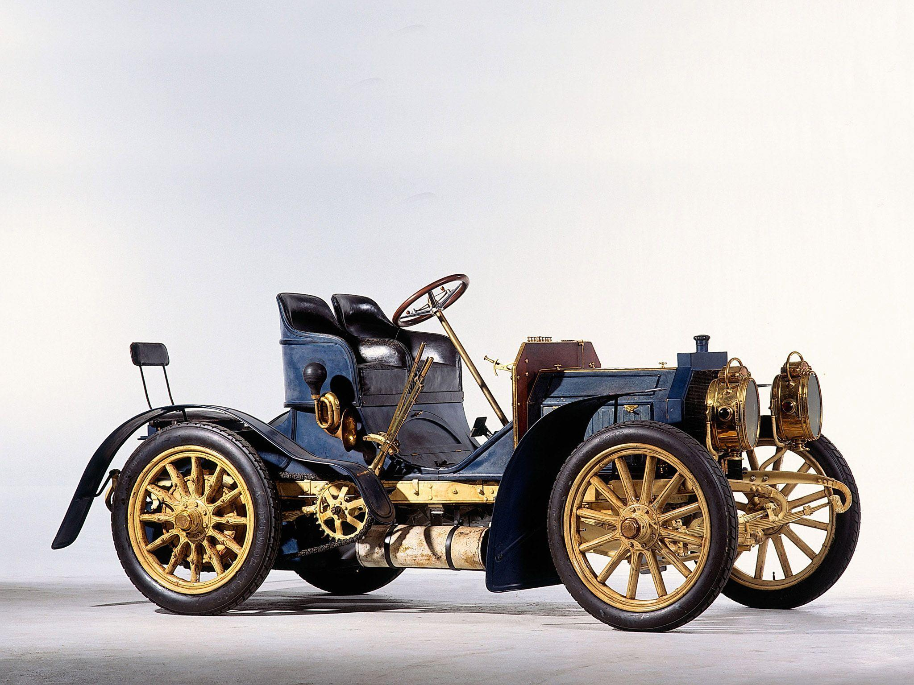

Mercedes-benz-ը ապրանքային նշան է և համանուն ընկերություն՝ պրեմիում դասի մեքենաների, բեռնատարների, ավտոբուսների և այլ տրանսպորտային միջոցների արտադրող, որը գերմhamo 28.jpgանական «Daimler AG» կոնցեռնի մաս է կազմում։ Այն աշխարհի ամենաճանաչված ավտոմեքենանbերի ապրանքանիշերից մեկն է [5]։ Mercedes-Benz-ի գլխամասային գրասենյակը գտնվում է Շտուտգարտում, Բադեն-Վյուրտեմբերգ, Գերմանիա:
Ապրանքանիշը ընդունվել է 1926 թվականին [6] երկու մրցակից ընկերությունների՝ Benz & Cie-ի միաձուլման միջոցով։ (հիմնադրել է Կարլ Բենցը) և Daimler-Motoren-Gesellschaft-ը (հիմնադրել է Գոթլիբ Դայմլերը), մեկ կոնցեռնի մեջ՝ Daimler-Benz: Ապրանքանիշի անվանումը առաջացել է միավորված ընկերությունների երկու ամենակարևոր մեքենաներից՝ 1901 թվականի Mercedes-ից և 1886 թվականի Benz Patent-Motorwagen-ից
1893 թվականին Կարլ Բենցը ստացավ DRP No. 73515 կրկնակի կառավարման ձողի համար և նախաձեռնել է «Վիկտորիա» քառանիվ մեքենաների արտադրությունը 3 ձիաուժ հզորությամբ շարժիչով։ ս [10], որի արագությունը 17-20 կմ/ժ էր։ Առաջին տարում վաճառվել է այդ մեքենաներից 45-ը։ 1894 թվականին ընկերությունը սկսել է արտադրել «Velo» մոդելի մեքենաներ, որոնք մասնակցել են Փարիզ-Ռուան առաջին ավտոարշավներին։ 1895 թվականին ստեղծվեց առաջին բեռնատարը, ինչպես նաև պատմության մեջ առաջին ավտոբուսները
2018 թվականին Mercedes-Benz ապրանքանիշը գնահատվել է 48,601 միլիարդ դոլար՝ զբաղեցնելով երկրորդ տեղը (Toyota-ից հետո) ավտոարտադրողների շրջանում և ութերորդը՝ աշխարհի բոլոր ապրանքանիշերի մեջ [5]։ Ըստ BrandZ-ի՝ 2018 թվականին ապրանքանիշն ընդգրկվել է 100 ամենաարժեքավոր համաշխարհային ապրանքանիշերի ցանկում, որտեղ 25,684 միլիարդ դոլար արժեքով ամենաթանկ ապրանքանիշերի շարքում զբաղեցրել է 46-րդ տեղը [7]: 2019 թվականին Mercedes-Benz ապրանքանիշը գնահատվել է 60,355 միլիարդ դոլար՝ այդպիսով զբաղեցնելով առաջին տեղը ավտոարտադրողների վարկանիշում